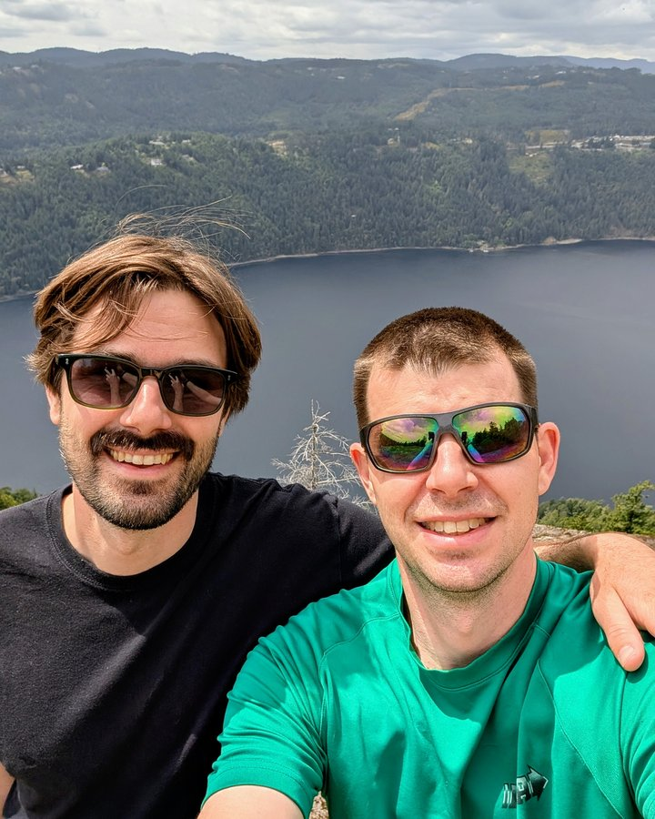
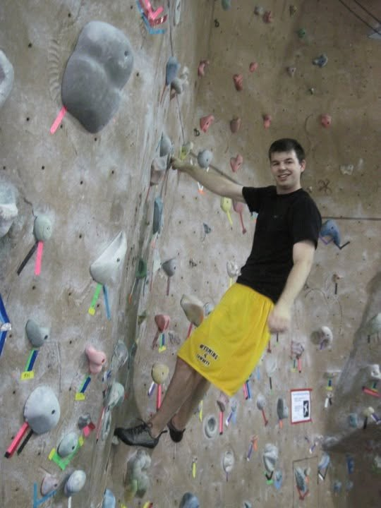
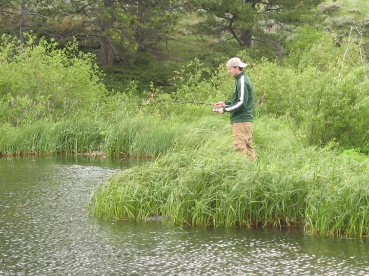

About
Howdy! I’m a philosopher who found his way into ontology, which turns out to be a surprisingly practical way to keep doing philosophy for a living. I build ontology data models and knowledge graphs, and I spend a good chunk of my spare time explaining ontology and AI to anyone who will listen.

How I got here

I studied math and philosophy at Pacific Lutheran University. Then I went on to get my MA in Philosophy at the University of Wyoming. I earned my PhD in philosophy from the University of Wisconsin-Madison. I wanted to be a professor, but I was tempted by this posting for a job in Austin at Cycorp for an 'ontologist' (whatever the heck that meant!). I discovered a whole new world. At Cyc, we aimed to build a vast knowledge base to codify the facts and heuristics that give rise to common sense reasoning. Since then I’ve spent the past decade building data models for small companies, startups, Amazon, and everything in between.
Along the way I started a YouTube channel, Ontology Explained, as a way to combine my love of teaching and synthesizing ideas with the range of academic and industry topics I probably spend too much time thinking about. There’s also a podcast, Philosophy, Programs, and Prompts, which combines my philosophy and ontology takes with Carl Brown's wealth of programming knowledge. It's a fun conversation for me every week.
Ontology Explained (YouTube) · Philosophy, Programs, and Prompts (Podcast)
Away from the keyboard
When I’m not working, I’m usually on our little ‘farm’ with my talented wife, an avid gardener with an unhealthy obsession with fig trees, and our three daughters.
I have a wide variety of hobbies. There are so many cool things to do, and I want to be good at all of them. Some examples:
- Outdoors: biking, hiking, fishing, rock climbing, kayaking, swimming in cold water all year
- Sports: tennis, basketball, pickleball, ultimate frisbee
- Fitness: weight training, running
- Community: church, coaching my girls’ basketball teams, board member for the tennis center
- Video games: Dark Souls, Hollow Knight, Elder Scrolls, Civ III, Halo, Slay the Spire

Say hello
If any of this sounds interesting, I’d love to hear from you. I’m happy to talk about a speaking engagement, a consulting project, ontology, or just a good conversation with a new person. My favorite thing about the internet is its ability to bring together people from different backgrounds in ways that make the world feel small and connected.
Get in touch